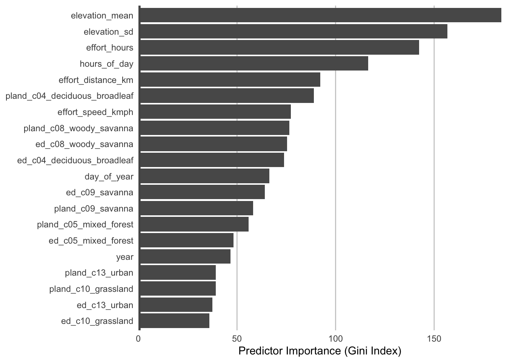

library(ebirdst)
library(fields)
library(gridExtra)
library(mccf1)
library(PresenceAbsence)
library(ranger)
library(scam)
library(sf)
library(terra)
library(verification)
library(tidyverse)
# set random number seed to insure fully repeatable results
set.seed(1)
# setup results directory for saved results
dir.create("results/", showWarnings = FALSE, recursive = )
# habitat variables: landcover and elevation
habitat <- read_csv("data/environmental-variables_checklists.csv")
# zero-filled ebird data combined with habitat data
checklists <- read_csv("data/checklists-zf_woothr_june_us-ga.csv") %>%
inner_join(habitat, by = "checklist_id")
# prediction surface
pred_surface <- read_csv("data/environmental-variables_prediction-surface.csv")
r <- rast("data/prediction-surface.tif") %>%
# this second rast() call removes all the values from the raster template
rast()
crs <- st_crs(r)
# load gis data for making maps
study_region <- read_sf("data/gis-data.gpkg", "ne_states") %>%
filter(state_code == "US-GA") %>%
st_transform(crs = crs) %>%
st_geometry()
ne_land <- read_sf("data/gis-data.gpkg", "ne_land") %>%
st_transform(crs = crs) %>%
st_geometry()
ne_country_lines <- read_sf("data/gis-data.gpkg", "ne_country_lines") %>%
st_transform(crs = crs) %>%
st_geometry()
ne_state_lines <- read_sf("data/gis-data.gpkg", "ne_state_lines") %>%
st_transform(crs = crs) %>%
st_geometry()4 Modeling Encounter Rate
4.1 Introduction
In this chapter we’ll estimate the encounter rate of Wood Thrush on eBird checklists in June in the state of Georgia. We define encounter rate as measuring the probability of an eBirder encountering a species on a standard eBird checklist.
The ecological metric we’re ultimately interested in is the probability that a species occurs at a site (i.e. the occupancy probability). This is usually not possible to estimate with semi-structured citizen science data like those from eBird because we typically can’t estimate absolute detectability. However, by accounting for much of the variation in detectability by including effort covariates in our model, the remaining unaccounted detectability will be more consistent across sites (Guillera-Arroita et al. 2015). Therefore, the encounter rate metric will be proportional to occupancy, albeit lower by some consistent amount. For some easily detectable species the difference between occurrence and actual occupancy rate will be small, and these encounter rates will approximate the actual occupancy rates of the species. For harder to detect species, the encounter rate may be substantially lower than the occupancy rate.
Random forests are a general purpose machine learning method applicable to a wide range of classification and regression problems, including the task at hand: classifying detection and non-detection of a species on eBird checklists. In addition to having good predictive performance, random forests are reasonably easy to use and have several efficient implementations in R. Prior to fitting a random forest model, we’ll demonstrate how to address issues of class imbalance and spatial bias using spatial subsampling on a regular grid. After fitting the model, we’ll assess its performance using a subset of data put aside for testing, and calibrate the model to ensure predictions are accurate. Finally, we’ll predict encounter rates throughout the study area and produce maps of these predictions.
4.2 Data preparation
Let’s get started by loading the necessary packages and data. If you worked through the previous chapters, you should have all the data required for this chapter. However, you may want to download the data package, and unzip it to your project directory, to ensure you’re working with exactly the same data as was used in the creation of this book.
4.3 Spatiotemporal subsampling
As discussed in the introduction, three of the challenges faced when using eBird data, are spatial bias, temporal bias, and class imbalance. Spatial and temporal bias refers to the tendency of eBird checklists to be distributed non-randomly in space and time, while class imbalance is the phenomenon that there are many more non-detections than detections for most species. All three can impact our ability to make reliable inferences from these data. Fortunately, all three can largely be addressed through subsampling the eBird data prior to modeling. In particular, we define an equal area, 3km by 3km square grid across the study region, then subsample detections and non-detections independently to ensure that we don’t lose too many detections. To address temporal bias, we’ll sample one detection and one non-detection checklist from each grid cell for each week of each year. Fortunately, the package ebirdst has a function grid_sample_stratified() that is specifically design to perform this type of sampling on eBird checklist data.
Before working with the real data, it’s instructive to look at a simple toy example, to see how this subsampling process works.
# generate random points for a single week of the year
pts <- data.frame(longitude = runif(500, -0.1, 0.1),
latitude = runif(500, -0.1, 0.1),
day_of_year = sample(1:7, 500, replace = TRUE))
# sample one checklist per grid cell
# by default grid_sample() uses a 3km x 3km x 1 week grid
pts_ss <- grid_sample(pts)
# generate polygons for the grid cells
ggplot(pts) +
aes(x = longitude, y = latitude) +
geom_point(size = 0.5) +
geom_point(data = pts_ss, col = "red") +
theme_bw()
In the above plot, the full set of points is shown in black and the subsampled points are shown in red. Now let’s apply exactly the same approach to subsampling the real eBird checklists; however, now we subsample temporally in addition to spatially, and sample detections and non-detections separately.
# sample one checklist per 3km x 3km x 1 week grid for each year
# sample detection/non-detection independently
checklists_ss <- grid_sample_stratified(checklists,
obs_column = "species_observed")How did this impact the prevalence of detections compared to non-detections?
# original data
nrow(checklists)
#> [1] 43921
count(checklists, species_observed) %>%
mutate(percent = n / sum(n))
#> # A tibble: 2 × 3
#> species_observed n percent
#> <lgl> <int> <dbl>
#> 1 FALSE 39522 0.900
#> 2 TRUE 4399 0.100
# after sampling
nrow(checklists_ss)
#> [1] 16236
count(checklists_ss, species_observed) %>%
mutate(percent = n / sum(n))
#> # A tibble: 2 × 3
#> species_observed n percent
#> <lgl> <int> <dbl>
#> 1 FALSE 13911 0.857
#> 2 TRUE 2325 0.143So, the subsampling decreased the overall number of checklists by a factor of about four, but increased the prevalence of detections from 10.0% to 14.3%. This increase in detections will help the random forest model distinguish where birds are being observed; however, this does affect the prevalence rate of the detections in the data. As a result, the estimated probability of occurrence based on these subsampled data will be larger than the true occurrence rate. When examining the outputs from the models it will be important to recall that we altered the prevalence rate at this stage. Now let’s look at how the subsampling affects the spatial distribution of the observations.
# convert checklists to spatial features
all_pts <- checklists %>%
st_as_sf(coords = c("longitude","latitude"), crs = 4326) %>%
st_transform(crs = crs) %>%
select(species_observed)
ss_pts <- checklists_ss %>%
st_as_sf(coords = c("longitude","latitude"), crs = 4326) %>%
st_transform(crs = crs) %>%
select(species_observed)
both_pts <- list(before_ss = all_pts, after_ss = ss_pts)
# map
p <- par(mfrow = c(1, 2))
for (i in seq_along(both_pts)) {
par(mar = c(0.25, 0.25, 0.25, 0.25))
# set up plot area
plot(st_geometry(both_pts[[i]]), col = NA)
# contextual gis data
plot(ne_land, col = "#dddddd", border = "#888888", lwd = 0.5, add = TRUE)
plot(study_region, col = "#cccccc", border = NA, add = TRUE)
plot(ne_state_lines, col = "#ffffff", lwd = 0.75, add = TRUE)
plot(ne_country_lines, col = "#ffffff", lwd = 1.5, add = TRUE)
# ebird observations
# not observed
plot(st_geometry(both_pts[[i]]),
pch = 19, cex = 0.1, col = alpha("#555555", 0.25),
add = TRUE)
# observed
plot(filter(both_pts[[i]], species_observed) %>% st_geometry(),
pch = 19, cex = 0.3, col = alpha("#4daf4a", 0.5),
add = TRUE)
# legend
legend("bottomright", bty = "n",
col = c("#555555", "#4daf4a"),
legend = c("Non-detection", "Detection"),
pch = 19)
box()
par(new = TRUE, mar = c(0, 0, 3, 0))
if (names(both_pts)[i] == "before_ss") {
title("Wood Thrush eBird Observations\nBefore subsampling")
} else {
title("After subsampling")
}
}
par(p)
For Wood Thrush, subsampling the detections and non-detections independently is sufficient for dealing with class imbalance. You can assess the impact of class imbalance by looking at the prevalence rates and examining whether the models are good at predicting to validation data. For species that are extremely rare, it may be worthwhile considering keeping all detections or even oversampling detections (Robinson, Ruiz-Gutierrez, and Fink 2018). In doing this, be aware that some of your species detections will not be independent, which could lead to overfitting of the data. Overall, when thinking about the number of detections and the prevalence rate, it’s important to consider both the ecology and detectability of the focal species, and the behavior of observers towards this species.
4.4 Random forests
Now we’ll use a random forest model to relate detection/non-detection of Wood Thrush to the habitat covariates (MODIS land cover and elevation), while also accounting for variation in detectability by including a suite of effort covariates. Before we fit the random forest model, we randomly split the data into 80% of checklists for training and 20% for testing. We’ll hold this 20% aside when we fit the model, then use it as an independent data set to test the predictive performance of the model.
train_test <- checklists_ss %>%
# select only the columns to be used in the model
select(species_observed,
year, day_of_year, hours_of_day,
effort_hours, effort_distance_km, number_observers,
starts_with("landcover_"),
starts_with("elevation_")) %>%
drop_na() %>%
# split into 80/20 test/train
split(if_else(runif(nrow(.)) <= 0.8, "train", "test"))
map_int(train_test, nrow)
#> test train
#> 3211 13024Although we were able to partially address the issue of class imbalance via subsampling, detections still only make up 14.3% of observations, and for rare species this number will be even lower. Most classification algorithms aim to minimize the overall error rate, which results in poor predictive performance for rare classes (Chen, Liaw, and Breiman 2004). To address this issue, we’ll use a balanced random forest approach, a modification of the traditional random forest algorithm designed to handle imbalanced data. In this approach, each of the trees that makes up the random forest is generated using a random sample of the data chosen such that there is an equal number of the detections (the rare class) and non-detections (the common class). To use this approach, we’ll need to calculate the proportion of detections in the dataset.
detection_freq <- mean(train_test$train$species_observed)There are several packages for fitting random forests in R; however, we’ll use ranger, which is a blazingly fast implementation with all the features we need. To fit a balanced random forest, we use the sample.fraction parameter to instruct ranger to grow each tree based on a random sample of the data that has an equal number of detections and non-detections. Specifying this is somewhat obtuse, because we need to tell ranger the proportion of the total data set to sample for non-detections and detections, and when this proportion is the same as the proportion of the rarer class–the detections–then then ranger will sample from all of the rarer class but from an equally sized subset of the more common non-detections. We use replace = TRUE to ensure that it’s a bootstrap sample. We’ll also ask ranger to predict probabilities, rather than simply returning the most probable class, with probability = TRUE.
# ranger requires a factor response to do classification
er_model <- ranger(formula = as.factor(species_observed) ~ .,
data = train_test$train,
importance = "impurity",
probability = TRUE,
replace = TRUE,
sample.fraction = c(detection_freq, detection_freq))4.4.1 Calibration
For various reasons, the predicted probabilities from models do not always align with the observed frequencies of detections. For example, we would hope that if we look at all sites with a estimated probability of encounter of 0.2, that 20% of these would record the species. However, these probabilities are not always so well aligned. This will clearly be the case in our example, because we have deliberately inflated the prevalence of detection records in the data through the spatiotemporal subsampling process. We can produce a calibration of the predictions, which can be a useful diagnostic tool to understand the model predictions, and in some cases can be used to realign the predictions with observations. For information on calibration in species distribution models see Vaughan and Ormerod (2005) and for more fundamental references on calibration see Platt (1999), Murphy (1973), and Niculescu-Mizil and Caruana (2005).
To view the calibration of our model results, we predict encounter rate for each checklist in the training set, then fit a binomial Generalized Additive Model (GAM) with the real observed encounter rate as the response and the predicted encounter rate as the predictor variable. Whereas GLMs fit a linear relationship between a response and predictors, GAMs allow non-linear relationships. Although GAMs provide a degree of flexibility, in some situations they may overfit and provide unrealistic and unhelpful calibrations. We have a strong a priori expectation that higher real values will also be associated with higher estimated encounter rates. In order to maintain the ranking of predictions, it is important that we respect this ordering and to do this we’ll use a GAM that is constrained to only increase. To fit the GAM, we’ll use the R package scam, so the shape can be constrained to be monotonically increasing. Note that predictions from ranger are in the form of a matrix of probabilities for each class, and we want the probability of detections, which is the second column of this matrix.
# predicted encounter rate predictions based on out of bag samples
er_pred <- er_model$predictions[, 2]
# observed detection, converted back from factor
det_obs <- as.integer(train_test$train$species_observed)
# construct a data frame to train the scam model
obs_pred <- tibble(obs = det_obs, pred = er_pred) %>%
drop_na()
# fit calibration model
calibration_model <- scam(obs ~ s(pred, k = 6, bs = "mpi"),
gamma = 2,
data = obs_pred)To use the calibration model as a diagnostic tool, we’ll group the predicted encounter rates into bins, then calculate the mean predicted and observed encounter rates within each bin. This can be compared to predictions from the calibration model.
# group the predicted encounter rate into bins of width 0.02
# then calculate the mean observed encounter rates in each bin
er_breaks <- seq(0, 1, by = 0.02)
mean_er <- obs_pred %>%
mutate(er_bin = cut(pred, breaks = er_breaks, include.lowest = TRUE)) %>%
group_by(er_bin) %>%
summarise(n_checklists = n(),
pred = mean(pred),
obs = mean(obs),
.groups = "drop")
# make predictions from the calibration model
cal_pred <- data.frame(pred = er_breaks)
cal_pred <- predict(calibration_model, cal_pred, type = "response") %>%
bind_cols(cal_pred, calibrated = .)
# compared binned mean encouter rates to calibration model
ggplot(cal_pred) +
aes(x = pred, y = calibrated) +
geom_abline(slope = 1, intercept = 0, linetype = "dashed") +
geom_line(color = "blue") +
geom_point(data = mean_er,
aes(x = pred, y = obs),
size = 2, alpha = 0.6,
show.legend = FALSE) +
labs(x = "Estimated encounter rate",
y = "Observed encounter rate",
title = "Calibration model") +
coord_equal(xlim = c(0, 1), ylim = c(0, 1))
From this plot we can clearly see that the estimated encounter rates are mostly much larger than the observed encounter rates (all points fall below the dashed \(x = y\) line. So we see that the model is not well calibrated. However, we do see from the points that the relative ranking of predictions is largely good: sites with estimated higher encounter rate do mostly have higher observed encounter rates.
From this we have learnt that the model is good at distinguishing sites with high rates from those with low rates. For those readers familiar with using AUC scores to assess the quality of species distribution models, the graph is telling us that the model should have a high AUC value. However, the model is not so good at estimating encounter rates accurately.
If accurate encounter rates are required, and the calibration model is strong (close fit of points to the line in the figure above), then the calibration model can be used to calibrate the estimates from the random forest model, so they are adjusted to match the observed encounter rates more closely. The calibrated random forest model is the combination of the original random forest model followed by the calibration model.
If you’re using this model to calibrate your estimates, notice that the calibration curve can produce probabilities greater than 1 and less than 0, so when applying the calibration we also need to restrict the predictions to be between 0 and 1. It’s possible to run a logistic regression for the calibration to remove these predictions less than 0 or greater than 1; however, we’ve found the Gaussian constrained GAM to be more stable than the logistic constrained GAM.
4.4.2 Thresholding
The random forest model produces continuous estimates of encounter rate from 0-1. However, for many applications, including assessing model performance, we’ll need to reclassify this continuous probability to a binary presence/absence estimate. This reclassification is done by setting a threshold above which the species is predicted to be absent. The threshold is typically chosen to maximize a performance metric such as the Kappa statistic or the area under the ROC curve. However, for class imbalanced data, such as eBird data where non-detections are much more common, many of these metrics can inflate performance by over-weighting the more common class (Cao, Chicco, and Hoffman 2020). To mitigate these issues, we suggest a threshold setting method using the MCC-F1 curve. This method plots Matthews correlation coefficient (MCC) against the F1 score for a range of possible threshold, then chooses the threshold where the curve is closest to the point of perfect performance. The R packge mccf1 implements the method.
# mcc and fscore calculation for various thresholds
mcc_f1 <- mccf1(
# observed detection/non-detection
response = obs_pred$obs,
# predicted encounter rate from random forest
predictor = obs_pred$pred)
# identify best threshold
mcc_f1_summary <- summary(mcc_f1)
#> mccf1_metric best_threshold
#> 0.395 0.56
threshold <- mcc_f1_summary$best_threshold[1]4.4.3 Assessment
To assess the quality of the calibrated random forest model, we’ll validate the model’s ability to predict the observed patterns of detection using independent validation data (i.e. the 20% test data set). We’ll use a range of predictive performance metrics to compare the predictions to the actual observations: mean squared error (MSE), sensitivity, specificity, AUC, Kappa, F1 score, and MCC. Several of these metrics require the predicted probabilities to be classified into detection/non-detection.
# predict on test data using random forest model
pred_er <- predict(er_model, data = train_test$test, type = "response")
# extract probability of detection
pred_er <- pred_er$predictions[, 2]
# convert to binary using the threshold
pred_binary <- pred_er > threshold
# calibrate
pred_calibrated <- predict(calibration_model,
newdata = data.frame(pred = pred_er),
type = "response") %>%
as.numeric()
obs_pred_test <- data.frame(id = seq_along(pred_calibrated),
# actual detection/non-detection
obs = train_test$test$species_observed,
# binary detection/on-detection prediction
pred_binary = pred_binary,
# calibrated encounter rate
pred_calibrated = pred_calibrated) %>%
# constrain probabilities to 0-1
mutate(pred_calibrated = pmin(pmax(pred_calibrated, 0), 1)) %>%
drop_na()
# mean squared error (mse)
mse <- mean((obs_pred_test$obs - obs_pred_test$pred_calibrated)^2, na.rm = TRUE)
# calculate metrics for binary prediction: auc, kappa, sensitivity, specificity
pa_metrics <- obs_pred_test %>%
select(id, obs, pred_binary) %>%
presence.absence.accuracy(na.rm = TRUE, st.dev = FALSE)
# mcc and f1
mcc_f1 <- calculate_mcc_f1(obs_pred_test$obs, obs_pred_test$pred_binary)
# combine metrics together
rf_assessment <- tibble(
mse = mse,
sensitivity = pa_metrics$sensitivity,
specificity = pa_metrics$specificity,
auc = pa_metrics$AUC,
kappa = pa_metrics$Kappa,
mcc = mcc_f1$mcc,
f1 = mcc_f1$f1
)
knitr::kable(pivot_longer(rf_assessment, everything()),
digits = 3)| name | value |
|---|---|
| mse | 0.103 |
| sensitivity | 0.568 |
| specificity | 0.854 |
| auc | 0.711 |
| kappa | 0.364 |
| mcc | 0.371 |
| f1 | 0.476 |
Each of these metrics can inform us about different aspects of the model fit. The objectives of your study will determine which of these metrics is most important. For example, if you want to ensure that the model definitely includes all areas where the species occurs, you would seek to have high sensitivity. Alternatively, if you want to ensure that the species does indeed occur in all places the model predicts the species to occurr (for example, when identifying areas for conservation action), you would seek to maximise specificity.
4.5 Habitat associations
From the random forest model, we can glean two important sources of information about the association between Wood Thrush detection and features of their local environment. First, predictor importance is a measure of the predictive power of each variable used as a predictor in the model, and is calculated as a byproduct of fitting a random forest model. Second, partial dependence plots estimate the marginal effect of one predictor holding all other predictors constant.
4.5.1 Predictor importance
During the process of fitting a random forest model, some variables are removed at each node of the trees that make up the random forest. Predictor importance is based on the mean decrease in accuracy of the model when a given predictor is not used. It’s technically an average Gini index, but essentially larger values indicate that a predictor is more important to the model.
pi <- enframe(er_model$variable.importance, "predictor", "importance") %>%
# only show the top 20
slice_max(order_by = importance, n = 20)
# plot
ggplot(pi) +
aes(x = fct_reorder(predictor, importance), y = importance) +
geom_col() +
geom_hline(yintercept = 0, linewidth = 2, colour = "#555555") +
scale_y_continuous(expand = c(0, 0)) +
coord_flip() +
labs(x = NULL,
y = "Predictor Importance (Gini Index)") +
theme_minimal() +
theme(panel.grid = element_blank(),
panel.grid.major.x = element_line(colour = "#cccccc", linewidth = 0.5))
The most important predictors of detection/non-detection are often effort variables. Indeed, that’s the case here: start time (hours_of_day) and checklist duration both have high predictor importance. This tells us that the time of day and length of time the observer was out, both have a large effect on whether Wood Thrush was recorded on the checklist.
Both elevation variables have high importance, and the top habitat variables are from landcover classes 14, 21, and 22. To lookup the descriptions of each of these classes refer to file data/mcd12q1_fao_classes.csv in the data package for this book.
read_csv("data/mcd12q1_fao_classes.csv") %>%
select(class, name, description) %>%
filter(class %in% c(14, 21, 22)) %>%
knitr::kable()| class | name | description |
|---|---|---|
| 14 | Deciduous Broadleaf Forests | Dominated by deciduous broadleaf trees (>2m). Tree cover >60%. |
| 21 | Open Forests | Tree cover 30-60% (canopy >2m). |
| 22 | Sparse Forests | Tree cover 10-30% (canopy >2m). |
Note that high importance doesn’t tell us the direction of the relationship with detection, for that we’ll have to look at partial dependence plots.
Let’s grab the top 9 most important predictors, which we’ll need in the next section.
# top 9 predictors other than date
top_pred <- pi %>%
filter(!predictor %in% c("year", "day_of_year")) %>%
slice_max(order_by = importance, n = 9) %>%
arrange(desc(importance))4.5.2 Partial dependence
Partial dependence plots show the marginal effect of a given predictor on encounter rate averaged across the other predictors. These plots are generated by predicting encounter rate at a regular sequence of points across the full range of values of a given predictor. At each predictor value, predictions of encounter rate are made for a random subsample of the training dataset with the focal predictor fixed, but all other predictors left as is. The encounter rate predictions are then averaged across all the checklists in the training dataset giving an estimate of the average encounter rate at a specific value of the focal predictor. This is a cumbersome process, but we provide a function below that does all the hard work for you! This function takes the following arguments:
predictor: the name of the predictor to calculate partial dependence formodel: the encounter rate modeldata: the original data used to train the modelx_res: the resolution of the grid over which to calculate the partial dependence, i.e. the number of points between the minimum and maximum values of the predictor to evaluate partial dependence atn: number of points to subsample from the training data
# function to calculate partial dependence for a single predictor
calculate_pd <- function(predictor, model, data,
x_res = 25, n = 1000) {
# create prediction grid using quantiles
x_grid <- quantile(data[[predictor]],
probs = seq(from = 0, to = 1, length = x_res),
na.rm = TRUE)
# remove duplicates
x_grid <- x_grid[!duplicated(signif(x_grid, 8))]
x_grid <- unname(unique(x_grid))
grid <- data.frame(predictor = predictor, x = x_grid)
names(grid) <- c("predictor", predictor)
# subsample training data
n <- min(n, nrow(data))
data <- data[sample(seq.int(nrow(data)), size = n, replace = FALSE), ]
# drop focal predictor from data
data <- data[names(data) != predictor]
grid <- merge(grid, data, all = TRUE)
# predict
p <- predict(model, data = grid)
# summarize
pd <- grid[, c("predictor", predictor)]
names(pd) <- c("predictor", "x")
pd$encounter_rate <- p$predictions[, 2]
pd <- dplyr::group_by(pd, predictor, x) %>%
dplyr::summarise(encounter_rate = mean(encounter_rate, na.rm = TRUE),
.groups = "drop")
return(pd)
}Now we’ll use this function to calculate partial dependence for the top 9 predictors.
# calculate partial dependence for each predictor
# map is used to iteratively apply calculate_pd to each predictor
pd <- NULL
for (predictor in top_pred$predictor) {
pd <- calculate_pd(predictor, model = er_model, data = train_test$train) %>%
bind_rows(pd, .)
}
# calibrate predictions
pd$encounter_rate <- predict(calibration_model,
newdata = tibble(pred = pd$encounter_rate),
type = "response") %>%
as.numeric()
# plot
ggplot(pd) +
aes(x = x, y = encounter_rate) +
geom_line() +
geom_point() +
scale_y_continuous(labels = scales::percent) +
facet_wrap(~ as_factor(predictor), nrow = 3, scales = "free") +
labs(x = NULL, y = "Encounter Rate") +
theme_minimal() +
theme_minimal() +
theme(panel.grid = element_blank(),
axis.line = element_line(color = "grey60"),
axis.ticks = element_line(color = "grey60"))
There are a range of interesting responses here. As seen in Section @ref(ebird-explore), the encounter rate for Wood Thrush peaks early in the morning when they’re most likely to be singing, then quickly drops off in the middle of the day, before slightly increasing in the evening. Some other predictors show a more smoothly increasing relationship with encounter rate, for example, as the landscape contains more deciduous forest, the encounter rate increases.
The random forest model has a number of interactions, which are not displayed in these partial dependence plots. When interpreting these, bear in mind that there are likely some more complex interaction effects beneath these individual plots.
4.6 Prediction
Now for the fun part: let’s use the calibrated random forest model to make a map of Wood Thrush encounter rate in Georgia! In Section @ref(envvar-pred), we created a prediction surface consisting of the habitat variables summarized on a regular grid of points across the study region. In this section, we’ll make predictions of encounter rate at these points. However, first we need to bring effort variables into this prediction surface. We’ll make predictions for a standard eBird checklist: a 1 km, 1 hour traveling count at the peak time of day for detecting this species. Finally, we’ll make these predictions for June 15, 2022, the middle of our June focal window for the latest year for which we have eBird data.
To find the time of day with the highest detection probability, we can look for the peak of the partial dependence plot. The one caveat to this approach is that it’s important we focus on times of day for which there are enough data to make predictions. In particular, there’s an increasing trend in detectability with earlier start times, and few checklists late at night, which can cause the model to incorrectly extrapolate that trend to show highest detectability at night. Let’s start by looking at a plot to see if this is happening here.
# find peak time of day from partial dependence
pd_time <- calculate_pd("hours_of_day",
model = er_model,
data = train_test$train,
# make estimates at 30 minute intervals
# using a subset of the training dataset
x_res = 2 * 24, n = 1000) %>%
select(hours_of_day = x, encounter_rate)
# histogram
g_hist <- ggplot(train_test$train) +
aes(x = hours_of_day) +
geom_histogram(binwidth = 1, center = 0.5, color = "grey30",
fill = "grey50") +
scale_x_continuous(breaks = seq(0, 24, by = 3)) +
scale_y_continuous(labels = scales::comma) +
labs(x = "Hours since midnight",
y = "# checklists",
title = "Distribution of observation start times")
# gam
g_pd <- ggplot(pd_time) +
aes(x = hours_of_day, y = encounter_rate) +
geom_line() +
scale_x_continuous(breaks = seq(0, 24, by = 3)) +
labs(x = "Hours since midnight",
y = "Probability of reporting",
title = "Observation start time partial dependence")
# combine
grid.arrange(g_hist, g_pd)
The peak probability of reporting is very close to the time of day during which the abundance of reports starts to increase, but from these graphs it is not entirely clear that the early morning peak in reports is well substantiated by abundant data. Let’s instead look for the peak time within hours of the day that contain at least 1% of the training data.
# hours with at least 1% of checklists
search_times <- train_test$train %>%
mutate(hours_of_day = floor(hours_of_day)) %>%
count(hours_of_day) %>%
mutate(pct = n / sum(n)) %>%
filter(pct >= 0.01)
# constrained peak time
t_peak <- pd_time %>%
filter(floor(hours_of_day) %in% search_times$hours_of_day) %>%
slice_max(order_by = encounter_rate) %>%
pull(hours_of_day)
t_peak
#> [1] 6.22Based on this analysis, the best time for detecting Wood Thrush is at 6:13 AM. Now we use this time to make predictions. This is equivalent to many eBirders all conducting a checklist within different grid cells on June 15 at 6:13 AM. We also add the other effort variables to the prediction dataset.
# add effort covariates to prediction
pred_surface_eff <- pred_surface %>%
mutate(observation_date = ymd("2022-06-15"),
year = year(observation_date),
day_of_year = yday(observation_date),
hours_of_day = t_peak,
effort_hours = 1,
effort_distance_km = 1,
number_observers = 1)
# predict
pred_er <- predict(er_model, data = pred_surface_eff, type = "response")
pred_er <- pred_er$predictions[, 2]
# apply calibration
pred_er_cal <- predict(calibration_model,
data.frame(pred = pred_er),
type = "response") %>%
as.numeric()
# add encounter rate estimate to prediction surface
predictions <- bind_cols(pred_surface_eff,
encounter_rate = pred_er_cal) %>%
select(cell_id, x, y, encounter_rate) %>%
mutate(encounter_rate = pmin(pmax(encounter_rate, 0), 1))Next, we’ll convert this data frame to spatial features using sf, then rasterize the points using the prediction surface raster template.
r_pred <- predictions %>%
# convert to spatial features
st_as_sf(coords = c("x", "y"), crs = crs) %>%
select(encounter_rate) %>%
# rasterize
rasterize(r, field = "encounter_rate", fun = "mean") %>%
setNames("encounter_rate")
# save the raster
r_pred <- writeRaster(r_pred, "results/encounter-rate_woothr.tif",
overwrite = TRUE,
gdal = "COMPRESS=DEFLATE")Finally, we can make a map of these encounter rate predictions!
par(mar = c(3.5, 0.25, 0.25, 0.25))
# set up plot area
plot(study_region, col = NA, border = NA)
plot(ne_land, col = "#dddddd", border = "#888888", lwd = 0.5, add = TRUE)
# define quantile breaks
brks <- global(r_pred, fun = quantile,
probs = seq(0, 1, 0.1), na.rm = TRUE) %>%
as.numeric() %>%
unique()
# label the bottom, middle, and top value
lbls <- round(c(0, median(brks), max(brks)), 2)
# ebird status and trends color palette
pal <- abundance_palette(length(brks) - 1)
plot(r_pred,
col = pal, breaks = brks,
maxpixels = ncell(r_pred),
legend = FALSE, axes = FALSE, bty = "n",
add = TRUE)
# borders
plot(ne_state_lines, col = "#ffffff", lwd = 0.75, add = TRUE)
plot(ne_country_lines, col = "#ffffff", lwd = 1.5, add = TRUE)
plot(study_region, border = "#000000", col = NA, lwd = 1, add = TRUE)
box()
# legend
par(new = TRUE, mar = c(0, 0, 0, 0))
title <- "Wood Thrush Encounter Rate (June 2022)"
image.plot(zlim = c(0, 1), legend.only = TRUE,
col = pal, breaks = seq(0, 1, length.out = length(brks)),
smallplot = c(0.25, 0.75, 0.06, 0.09),
horizontal = TRUE,
axis.args = list(at = c(0, 0.5, 1), labels = lbls,
fg = "black", col.axis = "black",
cex.axis = 0.75, lwd.ticks = 0.5,
padj = -1.5),
legend.args = list(text = title,
side = 3, col = "black",
cex = 1, line = 0))